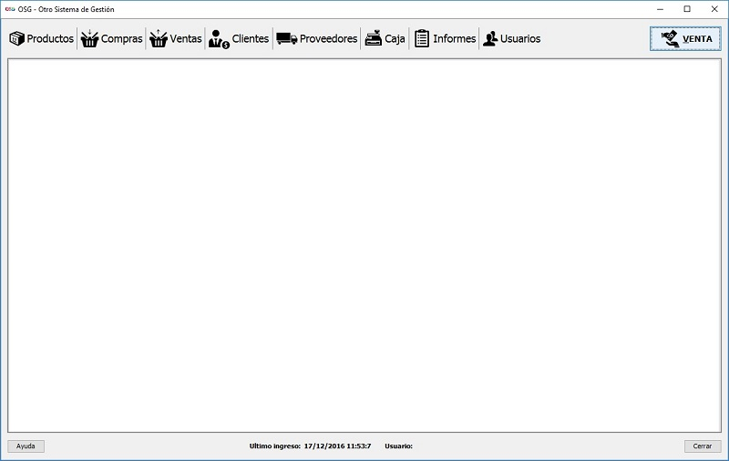

Esta es la ventana principal del software, donde se encuentran los distintos modulos (que se encontraran habilitados de acuerdo al tipo de usuario), estos modulos se dividen en "Productos", "Clientes", "Proveedores", "Presupuestos", "Caja", "Otros accesos" y "Venta", si este último boton es presionado se creará la pestaña para emitir una nueva venta.

A medida que vaya abriendo modulos, los mismos se agruparán en pestañas que se verán en la parte inferior de la ventana.
Para cerrar una pestaña simplemente oprima el boton "Cerrar" que se encuentra abajo a la derecha de la ventana.
Si lo que desea es salir del programa puede hacerlo con el boton "Cerrar" una vez que no queden pestañas abiertas o bien presionando la "X" situada en la esquina superior derecha de la ventana, el programa se cerrara luego de aceptada la confirmación de salida.